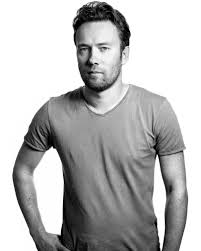

.svg)
Достижения
Мобильные версии Basecamp
В 2007 году компания Apple включила Ruby on Rails в комплект поставки OS X 10.5 (Leopard) (на DVD для разработчиков), что стало важным этапом в развитии фреймворка. Давид Ханссон до сих пор продолжает разработку Ruby on Rails. Как уже было сказано, фреймворк используют сотни тысяч программистов, он применялся для создания многих известных веб-сайтов, в том числе Twitter, GitHub, Shopify, Airbnb, Square, Coinbase, Twitch и Zendesk. А первым приложением на «рельсах» стал, естественно, Basecamp. Опенсорсный вики-движок Instiki (2007) на базе Ruby on Rails, с поддержкой MathML. Есть плагин для LaTeX. Премиальный почтовый сервис Hey (2020): новый подход к электронной почте. Сервис задумывался как альтернатива и полная противоположность стандартным почтовым сервисам, таким Gmail и Outlook, чтобы людям было действительно приятно и удобно проводить время в почте. Проект можно рассматривать как некий эксперимент в области пользовательских интерфейсов — почта с фидами, календарём, предварительным отсевом новых адресатов и другими интересными функциями: Конечно, DHH работал не один, он возглавлял этот проект как технический директор и ведущий программист. Компания нанимала разработчиков со всего мира, но штат не слишком разрастался: в 2012-м в Basecamp работало всего 33 сотрудника.В 2007 году компания Apple включила Ruby on Rails в комплект поставки OS X 10.5 (Leopard) (на DVD для разработчиков), что стало важным этапом в развитии фреймворка. Давид Ханссон до сих пор продолжает разработку Ruby on Rails. Как уже было сказано, фреймворк используют сотни тысяч программистов, он применялся для создания многих известных веб-сайтов, в том числе Twitter, GitHub, Shopify, Airbnb, Square, Coinbase, Twitch и Zendesk. А первым приложением на «рельсах» стал, естественно, Basecamp. Опенсорсный вики-движок Instiki (2007) на базе Ruby on Rails, с поддержкой MathML. Есть плагин для LaTeX. Премиальный почтовый сервис Hey (2020): новый подход к электронной почте. Сервис задумывался как альтернатива и полная противоположность стандартным почтовым сервисам, таким Gmail и Outlook, чтобы людям было действительно приятно и удобно проводить время в почте. Проект можно рассматривать как некий эксперимент в области пользовательских интерфейсов — почта с фидами, календарём, предварительным отсевом новых адресатов и другими интересными функциями: Конечно, DHH работал не один, он возглавлял этот проект как технический директор и ведущий программист. Компания нанимала разработчиков со всего мира, но штат не слишком разрастался: в 2012-м в Basecamp работало всего 33 сотрудника. В 2007 году компания Apple включила Ruby on Rails в комплект поставки OS X 10.5 (Leopard) (на DVD для разработчиков), что стало важным этапом в развитии фреймворка. Давид Ханссон до сих пор продолжает разработку Ruby on Rails. Как уже было сказано, фреймворк используют сотни тысяч программистов, он применялся для создания многих известных веб-сайтов, в том числе Twitter, GitHub, Shopify, Airbnb, Square, Coinbase, Twitch и Zendesk. А первым приложением на «рельсах» стал, естественно, Basecamp. Опенсорсный вики-движок Instiki (2007) на базе Ruby on Rails, с поддержкой MathML. Есть плагин для LaTeX. Премиальный почтовый сервис Hey (2020): новый подход к электронной почте. Сервис задумывался как альтернатива и полная противоположность стандартным почтовым сервисам, таким Gmail и Outlook, чтобы людям было действительно приятно и удобно проводить время в почте. Проект можно рассматривать как некий эксперимент в области пользовательских интерфейсов — почта с фидами, календарём, предварительным отсевом новых адресатов и другими интересными функциями: Конечно, DHH работал не один, он возглавлял этот проект как технический директор и ведущий программист. Компания нанимала разработчиков со всего мира, но штат не слишком разрастался: в 2012-м в Basecamp работало всего 33 сотрудника. В 2007 году компания Apple включила Ruby on Rails в комплект поставки OS X 10.5 (Leopard) (на DVD для разработчиков), что стало важным этапом в развитии фреймворка. Давид Ханссон до сих пор продолжает разработку Ruby on Rails. Как уже было сказано, фреймворк используют сотни тысяч программистов, он применялся для создания многих известных веб-сайтов, в том числе Twitter, GitHub, Shopify, Airbnb, Square, Coinbase, Twitch и Zendesk. А первым приложением на «рельсах» стал, естественно, Basecamp. Опенсорсный вики-движок Instiki (2007) на базе Ruby on Rails, с поддержкой MathML. Есть плагин для LaTeX. Премиальный почтовый сервис Hey (2020): новый подход к электронной почте. Сервис задумывался как альтернатива и полная противоположность стандартным почтовым сервисам, таким Gmail и Outlook, чтобы людям было действительно приятно и удобно проводить время в почте. Проект можно рассматривать как некий эксперимент в области пользовательских интерфейсов — почта с фидами, календарём, предварительным отсевом новых адресатов и другими интересными функциями: Конечно, DHH работал не один, он возглавлял этот проект как технический директор и ведущий программист. Компания нанимала разработчиков со всего мира, но штат не слишком разрастался: в 2012-м в Basecamp работало всего 33 сотрудника.
Сoтруднечество с 37signals
В 2012 году вышли мобильные версии Basecamp под iOS и Android, которые присоединились к нативным версиям под Windows и Mac, а также браузерному веб-приложениюПопулярность Basecamp в корпоративной среде была так велика, что в 2015 году компания 37signals сменила название на Basecamp (хотя в 2022 году вернулась к оригинальному названию). Этот SaaS-сервис до сих пор продаётся и приносит доход. Ну а Давид Ханссон благодаря этой разработке вошёл в число совладельцев (партнёров) 37signals и обеспечил себе финансовую независимость. На пике популярности в 2014 году в Basecamp еженедельно регистрировалось от 5000 до 6000 новых клиентов из более чем 100 стран. Можно примерно посчитать поток прибыли, если у каждого клиента десятки сотрудников, за которых оплачивается подписка в районе $25 в месяц. Джейсон Фрид тогда говорил, что один Basecamp генерирует десятки миллионов долларов прибыли в год. Частная фирма работала в чистый плюс с момента своего основания, каждый год, и сейчас 37signals считается образцом маленькой софтверной компании, которая стабильно генерирует большую прибыль, не привлекая венчурных инвестиций и не выпуская акции. Компания 37signals с самого начала разрешала всем своим сотрудникам работать удалённо, то есть ещё с начала 2000-х годов она была пионером удалённой разработки. Это позволило сократить текущие расходы и нанимать более профессиональных программистов со всего мира, в том числе из России. В 2014 году примерно 75% сотрудников проживали за пределами Чикаго, а в главном офисе они встречались примерно дважды в год. Веб-фреймворк Ruby on Rails (июль 2004) родился как побочный продукт в ходе разработки Basecamp. Интересно, что для создания фреймворка Ханссон выбрал относительно малоизвестный в то время язык программирования Ruby. В доктрине Rails Ханнсон объясняет выбор Ruby в том числе более понятным синтаксисом и поведением, например, в сравнении с Python:. Так или иначе, выбор оказался удачным. DHH до сих пор считает Ruby лучшим в мире языком программирования для написания веб-приложений. В отличие от коммерческой платформы, он сразу был опубликован с открытыми исходниками под свободной лицензией, что и стало залогом потрясающего успеха. В 2005 году этот фреймворк оказал сильное влияние на индустрию веб-разработки благодаря таким инновационным функциям, как лёгкое создание таблиц БД, миграция БД и скаффолдинг для быстрой разработки. Влияние Ruby on Rails заметно и сегодня: многие фреймворки на других языках заимствовали его идеи, включая Django на Python, Catalyst на Perl, Laravel, CakePHP и Yii на PHP, Grails на Groovy, Phoenix на Elixir, Play на Scala, Sails.js на Node.js. Это была современная философия проектирования, которая поддерживала принципы соглашения по конфигурации и Don’t repeat yourself (DRY, снижение повторения информации различного рода, особенно в системах со множеством слоёв абстрагирования). Давид Ханнсон написал даже официальную доктрину Rails, которая основана на девяти фундаментальных принципах. В 1999 году организовал датский веб-сайт о новостях в сфере онлайн-игр и сообщество Daily Rush, которое поддерживал до 2001 года. После окончания обучения в Копенгагенской школе бизнеса и получения степени бакалавра в области компьютерных наук и делового администрирования в ноябре 2005 года переехал из Копенгагена в Чикаго. В рамках работы в 37signals над проектом системы управления проектами Basecamp разработал программный каркас Ruby on Rails — инструментарий для построения веб-приложений на языке программирования Ruby. За создание Ruby on Rails в 2005 году был назван в OSCON экспертом года (Hacker of the Year). Является соавтором книги «Гибкая разработка веб-приложений в среде Rails» совместно с Дейвом Томасом, изданной в 2005 году. В 2006 году появился на обложке июльского номера журнала Linux Journal, в котором было опубликовано интервью с ним. В том же месяце по версии журнала Business 2.0 он занял 34 место в списке пятидесяти самых значимых людей в сфере Веб 2.0[1].
Книга «Rework»
В 2010 году вышла книга «Rework», написанная Ханссоном совместно с сооснователем 37signals Джэйсоном Фрайдом, посвящённая рекомендациям по организации стартапов[2], в 2013 году они же выпустили книгу «Remote: Office not required» о преимуществах удалённой работы[3].Главное увлечение Ханнсона — автогонки на выносливость. С 2012 года он десять раз участвовал в классической гонке 24 часа Ле-Мана, а в 2014 году он с командой Aston Martin выиграл (!) эту гонку в своём классе. Кроме того, DHH в соавторстве с коллегами написал книгу по веб-дизайну и четыре книги по бизнесу, одна из которых REWORK вошла в список бестселлеров New York Times, Wall Street Journal и Sunday Times с более чем миллионом проданных экземпляров. Давид ещё увлекается фотографией, больше всего любит фотографировать жену и троих детей, а также свои гоночные машины.Дэвид появился на обложке июльского номера журнала Linux Journal в 2006 г., в котором было опубликовано интервью с ним. В том же месяце по версии журнала Business 2.0 он занял 34 место в списке 50 самых значимых людей в сфере Веб 2.0.В 2005 году Дэвид был назван в OSCON экспертом года (Hacker of the Year) за создание фреймворка Ruby on Rails. После окончания обучения в Copenhagen Business School и получения степени бакалавра в области компьютерных наук и бизнес-администрирования, он переезжает из Дании в Чикаго, штат Иллинойс, США в ноябре 2005 г. еймворк Ruby on Rails (июль 2004) родился как побочный продукт в ходе разработки Basecamp. Интересно, что для создания фреймворка Ханссон выбрал относительно малоизвестный в то время язык программирования Ruby. В доктрине Rails Ханнсон объясняет выбор Ruby в том числе более понятным синтаксисом и поведением, например, в сравнении с Python:. Так или иначе, выбор оказался удачным. DHH до сих пор считает Ruby лучшим в мире языком программирования для написания веб-приложений. В отличие от коммерческой платформы, он сразу был опубликован с открытыми исходниками под свободной лицензией, что и стало залогом потрясающего успеха. В 2005 году этот фреймворк оказал сильное влияние на индустрию веб-разработки благодаря таким инновационным функциям, как лёгкое создание таблиц БД, миграция БД и скаффолдинг для быстрой разработки. Влияние Ruby on Rails заметно и сегодня: многие фреймворки на других языках заимствовали его идеи, включая Django на Python, Catalyst на Perl, Laravel, CakePHP и Yii на PHP, Grails на Groovy, Phoenix на Elixir, Play на Scala, Sails.js на Node.js. Это была современная философия проектирования, которая поддерживала принципы соглашения по конфигурации и Don’t repeat yourself (DRY, снижение повторения информации различного рода, особенно в системах со множеством слоёв абстрагирования). Давид Ханнсон написал даже официальную доктрину Rails, которая основана на девяти фундаментальных принципах. В 1999 году организовал датский веб-сайт о еймворк Ruby on Rails (июль 2004) родился как побочный продукт в ходе разработки Basecamp. Интересно, что для создания фреймворка Ханссон выбрал относительно малоизвестный в то время язык программирования Ruby. В доктрине Rails Ханнсон объясняет выбор Ruby в том числе более понятным синтаксисом и поведением, например, в сравнении с Python:. Так или иначе, выбор оказался удачным. DHH до сих пор считает Ruby лучшим в мире языком программирования для написания веб-приложений. В отличие от коммерческой платформы, он сразу был опубликован с открытыми исходниками под свободной лицензией, что и стало залогом потрясающего успеха. В 2005 году этот фреймворк оказал сильное влияние на индустрию веб-разработки благодаря таким инновационным функциям, как лёгкое создание таблиц БД, миграция БД и скаффолдинг для быстрой разработки. Влияние Ruby on Rails заметно и сегодня: многие фреймворки на других языках заимствовали его идеи, включая Django на Python, Catalyst на Perl, Laravel, CakePHP и Yii на PHP, Grails на Groovy, Phoenix на Elixir, Play на Scala, Sails.js на Node.js. Это была современная философия проектирования, которая поддерживала принципы соглашения по конфигурации и Don’t repeat yourself (DRY, снижение повторения информации различного рода, особенно в системах со множеством слоёв абстрагирования). Давид Ханнсон написал даже официальную доктрину Rails, которая основана на девяти фундаментальных принципах. В 1999 году организовал датский веб-сайт.